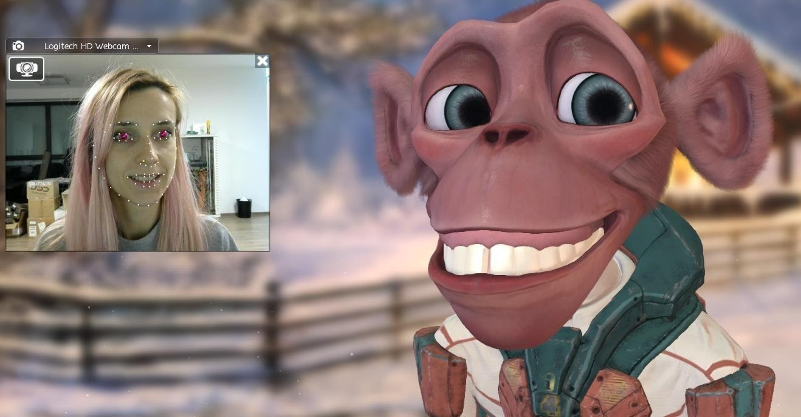
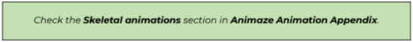
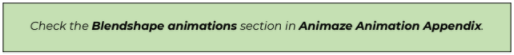

Animation
All animations for 3D objects must be provided in *.FBX format. The default scale factor should be set to identity, however it’s expressed in your 3D software (1,1,1 or 100,100,100). Scale factor can be animated.
Animations are placed in the same folder where the avatar's model is, in a separate dedicated folder. Standard animations – first percent will start from idle1 position, unless stated otherwise.
All base animations must be exported with animation keys on ALL bones. The base animations that we use are:
- idle1- is the base animation in which the avatar has micro movements and breathes, the arms are near the body
- idlePose - this is the first frame key from idle1 animation. The majority of other animations are built starting from this pose.
- MouthOpen - starts from idle pose animation. The last frame of this animation is the base for all other mouth open animations.
- MouthOpen_TongueOut
- MouthClosed_TongueOut
- TPose - animation used in full-body tracking (if you want to use those sets of animations it is necessary to have a symmetrical position in the idle animation)
There are 2 animation methods that we use:
-
Pure joint-based animations – all animations use the skeleton bones
-
A combination of joint-based animations with blendshapes animation
Skeletal animation (joint-based)
Animaze uses what we call animation atomics retargeting method, which implies that all required animations need to modify or animate a specific (typically small) part of the avatar. All the tracked movement (from a facial tracker) is split into very simple motions, which are called atomics. Each atomic is driven separately and combined (in many cases additively) to build a complex expression.
As an example, think of a happy smile expression, the tracking and interpretation modules of Animaze tech detect the following atomics: mouth corners smile, eyelids squint and interior eyebrows go up. These atomics are mapped with their animations (left and right) so that the avatar will display a happy smiling face, like in the example below.

For instance, if you are making the frown animation for the left eyebrow, named LeftBrowDown, then the only bones moving in that animation should be the middle and inner bones of the left eyebrow, all the rest should have the same exact transformation of their base animation, which is idle1.
Any offset in the additive animations brings a pose offset in Animaze. For example, if an eyebrow animation brings an offset to neck, every time the avatar will move that eyebrow, it will also transform the neck.
The program will identify the bones destined to move in the animation and will ignore the non- moving ones, making debugging simpler and avoiding transformations made by lack of precision.
Basically, all additive animations have as starting point the idle pose (the first or the last frame of the idle1 animation).
There are some exceptions form this rules like the additive animations of the other base animations (mouth open tongue out, mouth closed tongue out, TPose):
- MouthOpen_TongueOut animation and the aditive animations that are builted over (MouthOpenTongueOut_Up/Down and Left/Right). These are based on MouthOpen_TongueOut (last frame of the animation), which is also added on idle1 animation. These animations are: MouthOpen_TongueOut_LR and MouthOpen_TongueOut_UD.
- Animation for tongue while only the tip of the tongue is out: MouthClosed_TongueOut which is also added on idle1 animation. These animations are: MouthClosedTongueOut_LR, MouthClosed_TongueOut_UD.
Animaze supports some procedural animations that need reference bones in the skeleton. One of these animations is the look-at-camera function, that makes the avatar gaze into the camera.This feature relies on the transforms of the BipHead, BipLEye, and BipREye (with the axis convention in place: z forward, y in the right side, x vertical) bones.
BipRoot helps to position the avatar in scene using the same axis conventions as BipHead. For more detail you can check the picture bellow with the visual axis representation over the avatar Fluffo`s eyes.
Procedural animation techniques and actions are also used to substitute for lack or poor tracking of certain features and user movements:
-
Crossed eyes correction
-
Lazy eye correction
-
Look at camera behavior
-
Orientate head to camera behavior
-
Auto blinking behavior
-
Avatar idle animation (we animate certain parts of certain avatars regardless of tracking input to make them feel more alive, like how Fluffo’s ears occasionally twitch)
-
Natural pupil behavior (small micro movements undetectable by current tracking technologies)
-
Triggerable special animations (puffed cheeks, tongue & other custom animations e.g. fist bumps, hand-waves, dances can be created and tied to key-presses)
-
Triggerable special poses (e.g helmet visor open/closed) - animations that are toggleable and not influenced by the tracking interpretation mapping

Joint-based animations combined with blendshape animations
Blendshapes are being imported bringing their positions, their normals and their tangent space.
All additive blend shapes have as base NaturalPose blendshape which is the equivalent of the idle1 animation. Regarding the open/closed mouth blend shapes will be built as follows:
- these blendshapes are being built over NaturalPose & MouthOpen combined: MouthOpenLeft_U, MouthOpenRight_U, MouthOpenLeft_D, MouthOpenRight_D, MouthOpen_pursedLips_L, MouthOpen_pursedLips_Mid, MouthOpen_pursedLips_R, MouthOpenLeft_teethCovered_U, MouthOpenRight_teethCovered_U.
- these are being built over NaturalPose & MouthOpen_TongueOut combined: MouthOpen_TongueOut_L, MouthOpen_TongueOut_R, MouthOpen_TongueOut_U, MouthOpen_TongueOut_D.
- these are being built over NaturalPose & MouthClosed_TongueOut combined: MouthClosed_TongueOut_L, MouthClosed_TongueOut_R, MouthClosed_TongueOut_U, MouthClosed_TongueOut_D.
Unlike the full skeletal avatar (which has more facial bones), this hybrid type avatar needs a base rig which will contain only a smaller subset of the facial bones like BipHead, BipLEye, BipREye and BipTongue, the rest of the face being animated by the blendshapes. Expressions like eyes squint, open mouth, raised eyebrows etc, will be triggered through blendshapes.
